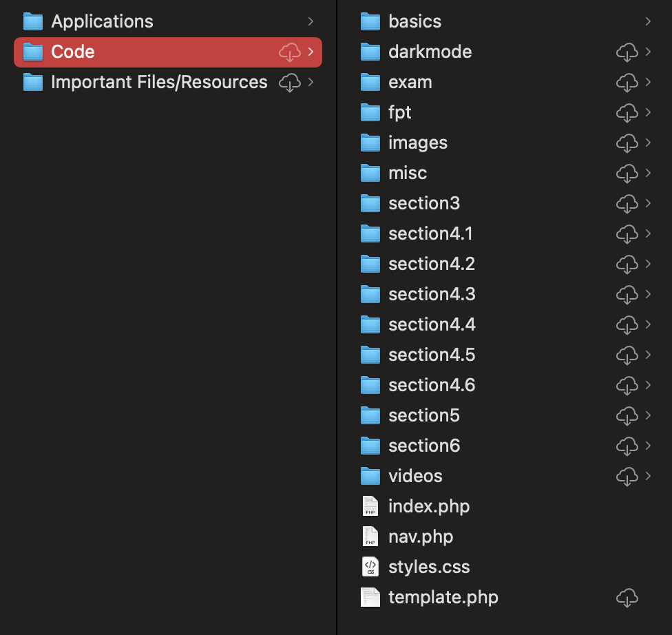

For my Computer Science Course in Grade 11, we were given the opportunity to work with website building. We began the course with the basics regarding the languages that we were going to use; HTML, CSS, and PHP. We then were given the opportunity to customize and create a template for ourselves that we could use for future assignments that would help display our skills and help complete tasks. This course not only allowed me to delve deeper into website building itself, but also allowed me to look at the work going on behind the scenes, and be able to manipulate code to make it look appealing and intriguing.